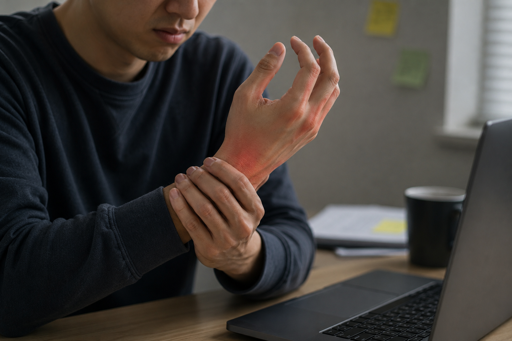
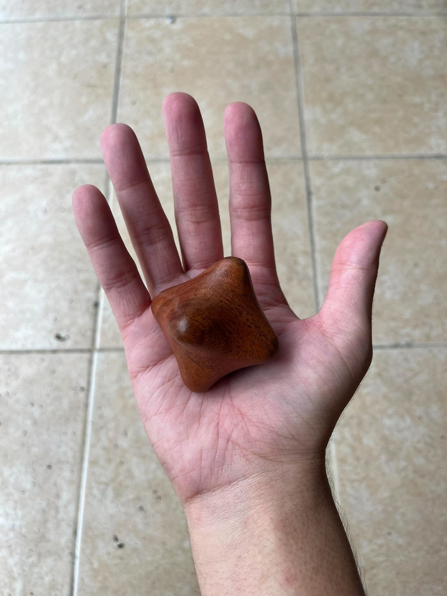

Hands Pain

I guess you all may experience the very same problem like I do when working with laptop for long straight hours daily. I feel like my hands tighten after working for that long duration. That is the primary reason why my hands feel stiff. With this daily repetition, it graudally establishes palms and fingers problems. I feel obviously numb and fatigue at my finger after working for an hour. I need 5 minutes or more to take a break. I have also noticed this physical pain at my hands and have done some hand exercise, but it doesn’t always work. Some point of tightness can’t be reached. Days after days, I have to pause my work to excercise regularly and recover. Consequently, I couldn’t focus my tasks. This pain distracts me.
I have found the solution!!!


Ultimately, I found that with a little hand exercise will not suffice to relieve this relentless pain from working continuously. I have just bought a wood palm massager to help me with that. It has a hexagon design that can reach pains by massaging every angle of your hands. This solves some points which can’t be reached by normal hand exercises. All you have to do is squeeze it, its angular tips can reach your targeted pressure. You can either roll it over your palm or anywhere you feel stiff. Within no time, you will be addicted to it and feel so much better. It is portable. You can take it to your workplace, use it while you are taking a break. This wood palm massager provides a great benefits for your hands.
Recommendation
Authentic Thai wooden massage tools are widely sold in local night markets, traditional wellness apothecaries, and community craft shops across Bangkok, Chiang Mai, and Phuket for very affordable prices.
Wood Plam Massager can be easily found anywhere you travel in Thailand, specifically in local areas. Also, you will discover various designs of this product. This is the ideal souvenir because it connects to daily life style and it is practical. If you are an expat who lives in Thailand or those who decide to visit, make sure this one is on your list!!!